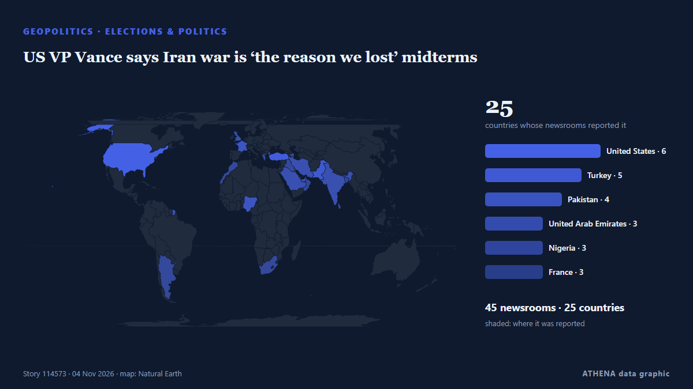

Geopolitics, Politics & Security
SponsoredPresented by  Cybernetics and Artificial Intelligence Lab Welcome to the Cybernetics and Artificial Intelligence Laboratory, established at the Department of Business Administration of the National and Kapodistrian University of Athens. The lab is headed by Professor Dimitrios Thomakos. The lab aims to do research that can be published in top venues. Our research uses tools and methods of Artificial Intelligence, and lies in the following areas: - Forecasting - Decision making - Cyber security - Finance We are always looking forward to collaborating with exceptional students!
Cybernetics and Artificial Intelligence Lab Welcome to the Cybernetics and Artificial Intelligence Laboratory, established at the Department of Business Administration of the National and Kapodistrian University of Athens. The lab is headed by Professor Dimitrios Thomakos. The lab aims to do research that can be published in top venues. Our research uses tools and methods of Artificial Intelligence, and lies in the following areas: - Forecasting - Decision making - Cyber security - Finance We are always looking forward to collaborating with exceptional students!

Elections & politicsUS VP Vance says Iran war is ‘the reason we lost’ midterms
US Vice President JD Vance attributed the loss of the Republicans in the midterms to involvement in the Iran war, echoing sentiments expressed by President Donald Trump. from Arab News
| 22 Oct | 272 |
|---|---|
| 23 Oct | 251 |
| 24 Oct | 175 |
| 25 Oct | 179 |
| 26 Oct | 318 |
| 27 Oct | 278 |
| 28 Oct | 236 |
| 29 Oct | 245 |
| 30 Oct | 286 |
| 31 Oct | 152 |
| 1 Nov | 210 |
| 2 Nov | 311 |
| 3 Nov | 309 |
| 4 Nov | 207 |
Zelenskyy awards Ukraine's Order of Princess Olga to US first lady Melania Trump
Ukrainian president honors Melania Trump for her 'significant personal contribution to humanitarian support' and efforts to rescue Ukrainian children and civilians. from Anadolu Agency (English)
Dozens dead and missing after Russian strike on Ukrainian aid centre, officials say
Nov 4 - The death toll from a Russian bombing of an aid distribution point in Ukraine's southeastern Zaporizhzhia region on Monday has risen to 37, with dozens missing, officials said, in one of the… from The Straits Times
Trump loses control of Congress
If Republicans lose control of Congress, the rest of his time in office is likely to be consumed by Democratic-led investigations into his administration and his business dealings, and possibly even… from PBS NewsHour
Trump says US will end military aid to Israel by end of the year
Says democrats, left-wing politicians using US financial support to Israel as a talking point to criticise Republicans. from Express Tribune
Elon Musk jokes about GOP election defeat after spending record sums on party
Elon Musk humorously commented on the Republican Party’s loss in the US midterm elections despite substantial financial contributions. from Arab News
Russia hits power stations in Ukraine’s regions of Kyiv
Russia has hit two power stations in Ukraine’s regions of Kyiv and Zhytomyr, the Russian defence ministry said on Telegram on Wednesday, keeping up nearly daily strikes on its neighbour’s energy… from Cyprus Mail
Progressive Abdul El-Sayed wins Michigan Senate race to become first Muslim US senator
What Americans are saying about how they voted in the midterm elections
Pope Leo XIV, the Catholic Church's first US-born pontiff, has voted in the United States midterm elections, submitting his mail-in ballot in Chicago, the Vatican confirmed. from RTÉ News
Democrats capture Congress in sweeping setback for Trump
Democrats captured majorities in both the Senate and House on Tuesday, scoring sweeping victories that reached deep into Republican strongholds as tens of millions of voters delivered a scathing… from The Korea Times
Russian strikes disrupt water and power in Kyiv
KYIV, Ukraine, Nov 4, (AP): Overnight attacks on critical infrastructure triggered power and water outages across Kyiv and surrounding regions Wednesday as rescuers combed throug... from Arab Times
Top takeaways from the US midterm elections
Exit polls point to widespread voter discontent over the cost of living and declining Republican support among several key groups that helped Trump win the 2024 presidential election. from The Kathmandu Post
Spain’s Sanchez reshuffles cabinet after transport minister quits over train crashes
Puente said he had decided to resign after the Urda crash and would not stand in the Nov 29 election. from The Straits Times
Russian strike on Kharkiv hospital raises injury toll to 73
In Kharkiv, 73 people were injured as a result of a Russian attack on the night of November 3. from Ukrinform (English)
Democrats projected to take over control of US House of Representatives
Control of the House depends on which party reaches the 218 seats necessary, while the Senate requires 51 for Democrats or 50 for Republicans because of Vice President JD Vance's tiebreaking vote. from PBS NewsHour
Democrat James Talarico wins Texas Senate seat
Democrat James Talarico has won the Senate seat in Texas, according to a race call by the Associated Press. from NPR
Neighbors are Iran's priority, Araghchi says
Iran's Qalibaf says progress only possible when Tehran's seven conditions are met Iran's parliament speaker said on Thursday that Tehran's conditions had been repeatedly and clearly communicated to… from Middle East Eye
US Midterms: Democrats take control of US Congress as voters reject Trump’s Republicans
Democrats have taken control of both chambers of the United States Congress in the November 3, 2026, midterm elections, dealing a major political setback to President Donald Trump and his Republican… from Vanguard
Lone Star turns blue: Democrats Talarico, Hinojosa topple Texas Republicans
Democrat James Talarico, a former schoolteacher and Presbyterian seminarian who campaigned on a “politics of love,” on Tuesday won the US Senate race in Texas, dealing a historic blow to Republicans… from Dawn
US Midterms: Trump accepts midterm results, pledges to work with Democrats
Democrats remain ahead in national polls as Trump and candidates make their final push in the days before polling day. from Al Jazeera English
Lula Can Fill Six Brazil Central Bank Seats
Our experts unpack what Lula’s victory means for Brazil’s ties with Washington and how it could reshape a region trending right. from Atlantic Council
Kremlin confirms trilateral talks on Ukraine set for Nov 10-11 in Abu Dhabi
The United States will bring together delegations from Ukraine and Russia in Abu Dhabi on November 10-11 to discuss ending Russia's conflict with Ukraine, post-conflict security agreements and… from CGTN (World)
US strikes Iran’s Qeshm island – Report
The US has not publicly announced the attacks, so as not to signal any intention of resuming major combat operations, the Wall Street Journal reported. from CNA (Channel NewsAsia)
First polls close in closely watched U.S. midterm elections
The US midterm elections next month could change the course of American politics at home and – and American policy abroad. from The National
Death toll hits 29 after Russian strike on Ukrainian aid site, with 48 still missing
Russia launched 289 attack drones, 17 ballistic missiles and 59 cruise missiles across nine regions, President Zelenskyy said in an online post that noted the barrage coincided with U.S. elections. from NPR
Iran-US deal still out of reach despite heightened diplomatic efforts
Iran and the United States are far from reaching a deal to end the war, a senior Iranian official told Reuters on Tuesday, despite heightened diplomatic efforts to prevent a potential return to… from Arab News
Indian Navy Rescues 20 Crew Members From Hijacked Iranian Vessel off Somalia
Airborne commandos recapture fishing boat seized by pirates as attacks off the Somali coast rise to their highest level since 2013. from Kurdistan24 (English)
UK PM Burnham says he is ‘open’ to formal apology for slavery, but rules out reparations
At least 12.5 million Africans were abducted and sold into slavery. from Express Tribune
Netanyahu Is Pressing Trump to Attack Iran After the Midterms, Officials Say
Democratic doctors aim to convert the backlash against the Trump administration’s health policies into midterm votes. from Al Jazeera English
Israeli strikes kill three people in Gaza, medics say
Israeli strikes killed at least three Palestinians and wounded several others in the Gaza Strip on Monday, the territory’s health officials said. from Cyprus Mail
N. Korea tests 'dispersal warhead' for cruise missiles following cluster bomb test
SEOUL, Nov. 3 (Yonhap) -- North Korea has tested a "dispersal warhead" for a str... from Yonhap (English)
Belgian PM offers resignation over budget, king defers decision
Belgian Prime Minister Bart De Wever tendered his resignation on Monday after budget talks failed, the Royal Palace said in a statement on X, adding that King Philippe had deferred a decision on… from CGTN (World)
Russia arrests minor after US Embassy warns of ‘credible threat of a mass casualty event’ in Moscow
Russia’s Federal Security Service says detainee posted TikTok videos showing object resembling weapon at Moscow museum-reserve. from Anadolu Agency (English)
UN peacekeeping mission in Western Sahara ends after 35 years
Morocco, which claims the Western Sahara as its own, welcomed the decision, while its opponents in the Algeria-backed Polisario Front expressed concern. from Free Malaysia Today